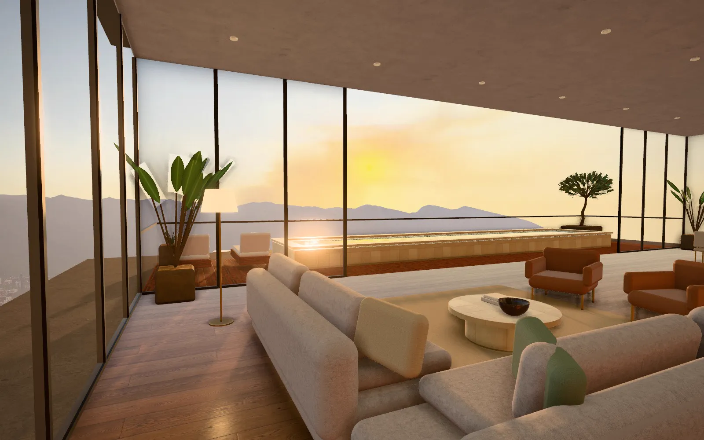
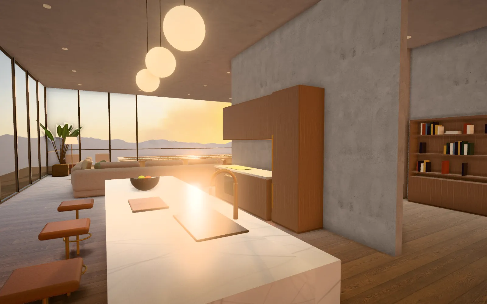
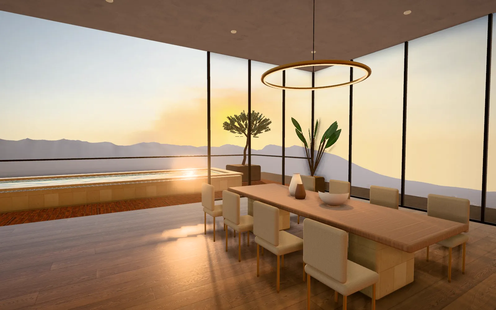
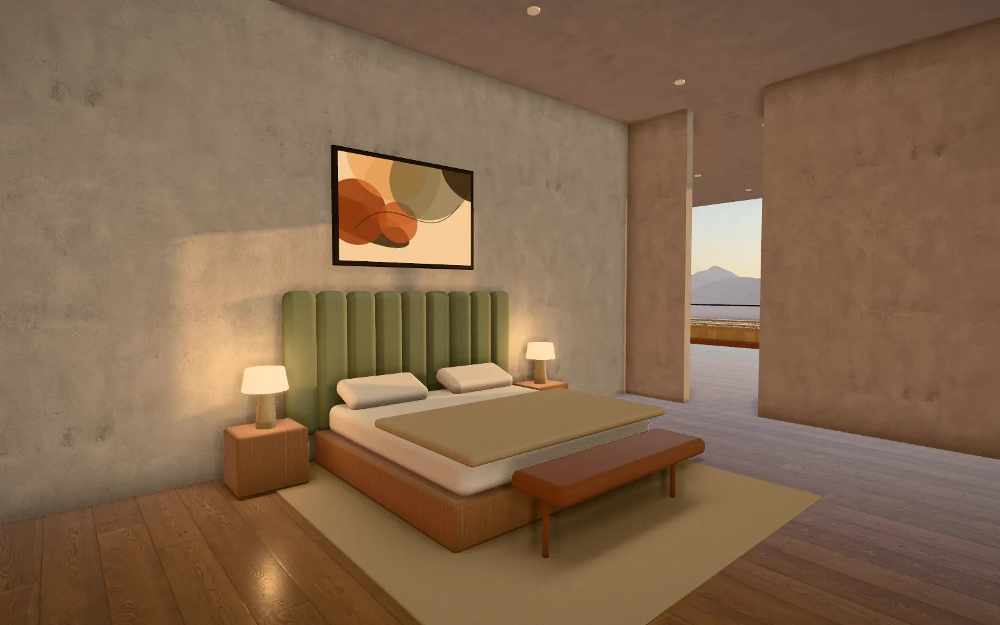
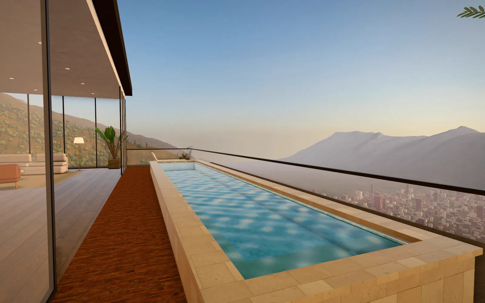

Asentada en roca
36 pilotes de 1 m de diámetro y un muro de contención que respeta la pendiente natural del lote.
Cimentación profunda
Residencias en la montaña · Medellín
Mira nacer la torre: 24 pisos sobre el Alto de Las Palmas, con el valle a tus pies.
Baja para construir
01 · Cimentación
36 pilotes anclados a roca y un basamento de ladrillo que se asienta en la ladera sin pelearse con ella.
02 · Estructura
Losas postensadas sin vigas: plantas libres para que cada hogar se acomode a quien lo vive.
03 · Fachada
Aletas de ladrillo a la vista que filtran el sol de la tarde y vidrio de piso a techo hacia el valle.
04 · Penthouse
360 m² con terraza y piscina de borde infinito suspendida sobre el valle de Aburrá.
05 · Amenidades
Piscina con deck al borde del valle, cancha de tenis reglamentaria, parqueadero para residentes y visitantes, y una vía de acceso con retorno frente al lobby.
Penthouse · piso 24
Las luces de la ciudad se encienden abajo. ¿Cómo quieres seguir?
01 · Arquitectura
Cuatro fachadas iguales y una sola regla: que cada hogar tenga paisaje, luz y aire de montaña.
36 pilotes de 1 m de diámetro y un muro de contención que respeta la pendiente natural del lote.
Cimentación profunda
Losas postensadas de 10,8 m de luz y balcones alternados que dan sombra al piso de abajo.
Espacios que se adaptan
Aletas verticales de ladrillo cocido y vidrio laminado acústico de piso a techo.
Silencio y luz natural
02 · Piso 24 · Cota +94,2 m
Un último piso de vidrio con sala de doble altura, terraza perimetral y una piscina que se asoma al valle.
Camina por los ambientes y cambia pisos y mesones en vivo. Para volver, presiona Esc o toca «Salir».





03 · Ubicación
Vía Las Palmas, sobre la ladera oriental. La dirección exacta la compartimos en la visita privada.
04 · Contacto
Te mostramos la torre, los apartamentos disponibles y el penthouse en un recorrido a tu medida.